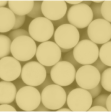
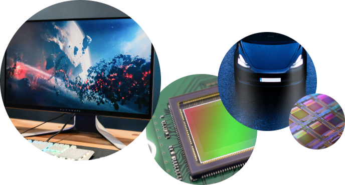

Monosized polymer particles

Spherica™ N
Spherica™ N is monodisperse particles with highly uniform particle size distribution used aas gap spacers in electric and electronic devices and as gap spacers in various displays, semiconductor sealing material and highly functional adhesive applications.
Product features
- Truly spherical particles with highly uniformed size.
- Available particle size is from 2μm to 40μm.
- Particle properties can be adjusted.
Gap spacer working principle
- These are particles with no metal coating, and the application is for gap spacer These are particles with no metal coating, and the application is for gap spacer

Applications
- Die stacking
- Display
- Optical CCD camera mounting
- High frequency applications: Controlled spacing of components to substrate
- Alignment in LED displays – Car head lights
Example / Die stacking
Below is content place holder.
Uniform particle size distribution, coefficient of variation (Cv) 7%, uniform gap control. Abundant particle size lineup from 2μm to 600μm.

Die stack without spacer

Die with particle spacer
Example / Display
Controlling gaps between glass substrates.